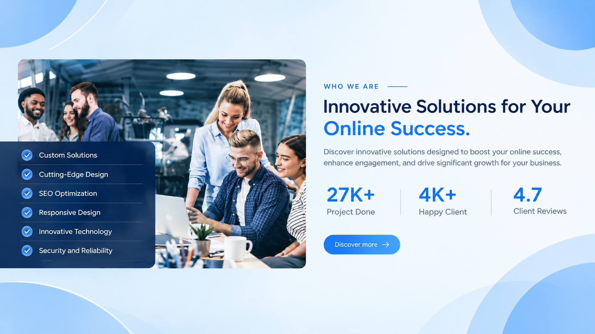

PROGRAM MAHASISWA WIRAUSAHA · 2025
digitalagency.web.id
Platform one-stop digital solution yang dirancang untuk membantu pelaku usaha membangun kehadiran digital dan memperluas jangkauan pasar melalui solusi yang terintegrasi, fleksibel, dan terjangkau bagi UMKM.
3Anggota Tim
11Mitra UMKM
Peran: Memimpin tim dalam merancang dan mengembangkan platform berbasis website serta bertanggung jawab atas strategi pemasaran untuk memperkenalkan layanan kepada calon mitra.
Show In Projects →